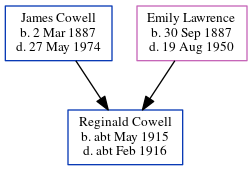

Reginald Albert Cowell cMay 1915 - c1916
[ Home ] | [ Calendar ] | [ Surnames Index ] | [ Errors ] | [ Family History ]The child of James Cowell (a seaman collier with the whitstable shipping company) and Emily Lawrence, Reginald Cowell, the uncle of Nigel Horne, was born in Eastry, Kent, England c. May 19151,2,3.
He died c. Feb 1916 in Eastry2,4,5 and was buried at Ss Peter & Paul, Sutton, Kent, England on 31 Mar 19165,6,7.
Parents
- James Frederick was born on 2 Mar 1887
- Emily Jane was born on 30 Sept 1887
Citations
- England & Wales births 1837-2006 - Findmypast
- England & Wales, Death Index: 1984-2005 Online publication - Provo, UT, USA: The Generations Network, Inc., 2007.Original data - General Register Office. England and Wales Civil Registration Indexes. London, England: General Register Office. © Crown copyright. Published by permission of the Cont
- England & Wales, FreeBMD Birth Index, 1837-1915 Online publication - Provo, UT, USA: The Generations Network, Inc., 2006.Original data - General Register Office. England and Wales Civil Registration Indexes. London, England: General Register Office. © Crown copyright. Published by permission of the Cont
- England & Wales deaths 1837-2007 - Findmypast
- England, Select Deaths and Burials, 1538-1991 Ancestry.com Operations, Inc.
- Kent, Canterbury Archdeaconry Burials - Findmypast
- England Deaths & Burials 1538-1991 - Findmypast
Media
England & Wales births 1837-2006 - BMD/B/1915/2/AZ/000314/042
England & Wales deaths 1837-2007 - BMD/D/1916/1/AZ/000217/112
Canterbury Burials - GBPRS/CANT/D/95322622
England Deaths & Burials 1538-1991 - R_276815553
Family Tree
Map
Generated by ged2site. Last updated on Jul 3, 2024